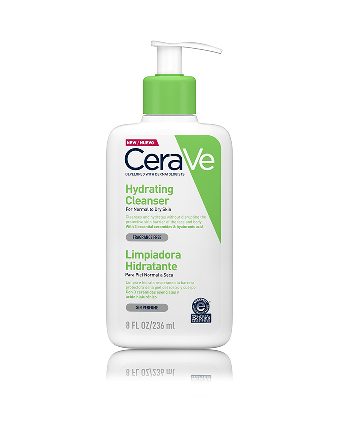

¿Qué es el acné?
El acné es una condición dermatológica compleja causada por múltiples factores, incluyendo exceso de sebo, bacterias, células muertas y hormonas. Existen diferentes tipos: comedones, pápulas, pústulas, nódulos y quistes.
Causas comunes
- ✔️ Cambios hormonales en la pubertad o menstruación
- ✔️ Dietas altas en azúcares y lácteos
- ✔️ Estrés crónico
- ✔️ Uso de productos comedogénicos
- ✔️ Higiene deficiente o excesiva
Consejos de cuidado
- 🧼 Lava tu rostro con un limpiador suave dos veces al día
- 💧 Hidratación es clave, incluso para pieles grasas
- 🌞 Usa protector solar no comedogénico diariamente
- 🧴 Evita productos con alcohol o fragancias fuertes
- 🧠 Consulta a un dermatólogo si el acné es severo
Productos recomendados

Limpiador CeraVe
Ideal para pieles con acné. Con ácido salicílico y niacinamida.

Neutrogena Hydro Boost
Hidratación ligera sin obstruir los poros.
Tutoriales en Video
Preguntas Frecuentes
¿El acné es solo cosa de adolescentes?
No, puede aparecer a cualquier edad, incluso en adultos.
¿Debo dejar de comer chocolate?
No necesariamente, pero algunos estudios sugieren que puede influir si se consume en exceso.